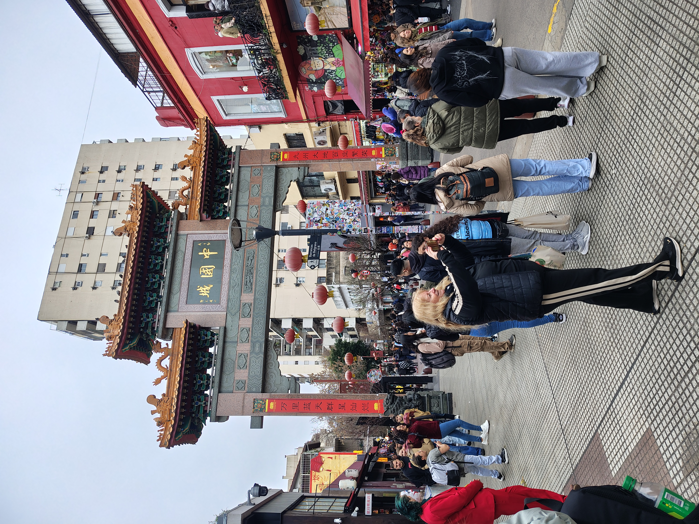

¡Bienvenidos al Barrio Chino!

En este sitio podrás conocer todo sobre el Gran Barrio Chino de Buenos Aires. Contamos con información actualizada de los locales tanto tradicionales como nuevos, para que puedas planear tu próxima visita.
Link del proyecto en GitHub: click aqui